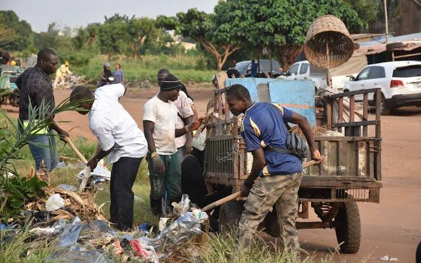
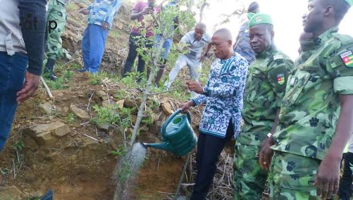

Vers la Ville Durable Togolaise : entre impératif écologique, réalité urbaine et urgence de gouvernance
Le Togo connaît depuis la fin des années 1990 une urbanisation d'une intensité que ses structures administratives, techniques et financières n'avaient pas anticipée. Lomé, dont la population avoisine désormais les deux millions d'habitants dans son aire métropolitaine, concentre à elle seule plus de 40 % de la population urbaine nationale. Kara, Atakpamé, Sokodé et Tsévié voient leurs périphéries se densifier à un rythme qui dépasse largement les capacités de planification des mairies concernées. Dans ce contexte, la notion de "ville durable" convoquée aussi bien dans les discours institutionnels que dans les projets financés par le PNUD, l'AFD ou la Banque mondiale court le risque de n'être qu'un concept exporté, plaqué sur des réalités urbaines qui n'en partagent ni les présupposés ni les conditions de mise en œuvre.
Cette analyse ne cherche pas à réfuter l'ambition. Elle cherche à la saisir avec rigueur, à la confronter aux faits togolais, à apprendre des expériences étrangères les plus pertinentes, et à proposer une feuille de route qui soit praticable, pas seulement souhaitable. Car la ville durable au Togo ne se décrète pas par un texte de loi, ne s'achète pas avec un financement extérieur et ne se résume pas à l'installation de poubelles à tri sélectif dans quelques quartiers de standing. Elle se construit, lentement, à la confluence de la planification spatiale, de la gouvernance participative, de la gestion environnementale et d'une culture politique locale qui accepte de mettre le long terme au-dessus du mandat électoral.

1. Ce que la ville durable signifie réellement et ce qu'elle n'est pas
Il est utile de partir d'une définition précise avant d'examiner les réalités togolaises. Le concept de développement urbain durable s'est construit progressivement depuis le rapport Brundtland de 1987 (Notre avenir à tous), qui a posé la définition fondatrice du développement durable : "un développement qui répond aux besoins du présent sans compromettre la capacité des générations futures à répondre aux leurs." Appliqué à l'urbain, ce principe se traduit par une triple exigence : viabilité écologique (la ville ne détruit pas les ressources naturelles dont elle dépend), équité sociale (la ville offre à tous ses résidents des conditions de vie décentes) et efficience économique (la ville génère de la richesse sans externaliser ses coûts sur l'environnement ou sur les populations vulnérables).
La sociologue américaine Saskia Sassen, dans ses travaux sur les "villes globales", rappelle qu'une ville véritablement durable est celle capable de métaboliser ses propres déchets autrement dit, d'absorber, recycler et valoriser les flux de matières, d'énergie et de populations qu'elle génère, sans en externaliser le coût sur d'autres territoires ou d'autres générations. Cette définition métabolique est particulièrement éclairante pour les villes togolaises : une ville qui déverse ses déchets dans les ravins et les lagunes, qui laisse l'eau de pluie inonder les quartiers faute de drainage planifié, et qui consomme du foncier périurbain sans projet d'ensemble, n'est pas en train de se construire durablement. Elle accumule des dettes environnementales que ses successeurs devront payer.
La ville durable mobilise aujourd'hui, dans la littérature internationale, trois grandes familles d'outils. La première est la planification intégrée : l'élaboration de schémas directeurs d'aménagement qui articulent usage des sols, infrastructures, mobilité et espaces naturels dans une vision cohérente à long terme. La deuxième est la gestion environnementale urbaine : la prise en charge effective des flux de déchets, des eaux usées, des eaux pluviales et de la pollution atmosphérique. La troisième est la gouvernance participative : l'association des habitants, des associations de quartier, des chefferies traditionnelles et du secteur privé à la définition et au suivi des politiques urbaines. Ces trois familles sont indissociables : la planification sans gouvernance produit des plans qui ne sont jamais mis en œuvre ; la gestion environnementale sans planification produit des interventions ponctuelles qui ne traitent pas les causes ; la gouvernance sans planification ni gestion produit de l'animation sans résultat.
2. L'état des villes togolaises : le poids d'une urbanisation non maîtrisée
Pour comprendre l'ampleur du défi, il faut d'abord mesurer les écarts entre la réalité urbaine togolaise et les standards minimaux d'un urbanisme durable. Ces écarts ne sont pas des déficits de bonne volonté, ils sont le produit d'une urbanisation rapide, d'un cadre institutionnel longtemps inadapté et d'un financement public des services urbains structurellement insuffisant.
2.1 Une urbanisation accélérée sans planification proportionnée
Le taux d'urbanisation du Togo est passé de 22 % en 1980 à plus de 43 % en 2023, selon les données de l'INSEED. Cette progression, l'une des plus rapides d'Afrique subsaharienne pour un pays de cette taille, s'est effectuée en grande partie dans des conditions d'informalité totale. À Lomé, les localités d'Agoè-Nyivé, de Bè Ahligo, de Déckon et de Hédzranawoé ont été construits sans plan de lotissement préalable, sans réserve foncière pour les équipements publics et sans réseau de drainage dimensionné pour les volumes pluviométriques locaux. Le résultat est une ville à double vitesse : quelques axes centraux aménagés et quelques quartiers restructurés, entourés d'une vaste nébuleuse périurbaine livrée à elle-même.
La Loi n° 2019-006 du 26 juin 2019 portant décentralisation et libertés locales a, en théorie, donné aux communes les compétences nécessaires pour planifier leur développement urbain, élaborer des schémas directeurs, créer des réserves foncières et réglementer l'occupation des sols. En pratique, la quasi-totalité des communes togolaises ne dispose pas encore des ressources humaines, techniques et financières pour exercer ces compétences. Les Plans de Développement Communaux (PDC) de la plupart des communes intègrent une composante urbanisme, mais elle reste le plus souvent descriptive et non prescriptive : on décrit ce qui existe, sans imposer ce qui doit changer.
2.2 La crise des déchets solides ménagers : un révélateur systémique
La gestion des déchets solides ménagers est l'indicateur le plus visible et le plus immédiat de la capacité d'une ville à métaboliser ses propres flux. À Lomé, la production quotidienne de déchets est estimée à plus de 1 200 tonnes par jour, dont moins de 60 % sont effectivement collectées par les différents opérateurs ENPRO, STADD, les GIE de précollecte et quelques autres prestataires privés. Le reste s'accumule dans les caniveaux, sur les berges des cours d'eau, dans les dépotoirs sauvages et sur les plages du littoral atlantique.
Cette situation n'est pas le fruit d'un manque de conscience environnementale des habitants les enquêtes qualitatives conduites dans les quartiers d'Agoè-Nyivé montrent que la majorité des ménages sont prêts à payer pour un service régulier et fiable. Elle est le résultat d'une gouvernance fragmentée : les compétences de collecte sont réparties entre l'État (à travers l'ANASAP), les communes (à travers les marchés de prestation) et les GIE, sans coordination, sans système d'information partagé sur les flux et sans station de traitement finale fonctionnelle en dehors du centre d'enfouissement technique d'Aképé, dont la capacité sera bientôt dépassée.
2.3 Les inondations urbaines : quand l'aménagement paie le prix de l'improvisation
Les inondations récurrentes de Lomé particulièrement dans les bassins versants de Bè et du Zio ne sont pas des catastrophes naturelles. Elles sont des catastrophes produites par l'urbanisation. Les bassins naturels de rétention ont été remblayés et construits. Les cours d'eau ont été obstrués par des déchets. Les revêtements imperméables toits en tôle, sols bétonnés, voiries asphaltées ont considérablement augmenté les coefficients de ruissellement. Le réseau de drainage a été dimensionné pour des intensités pluviométriques d'avant la densification et n'a pas été mis à niveau.
En 2021, les inondations dans la préfecture du Golfe ont affecté plus de 15 000 personnes selon les données de l'Agence Nationale de la Protection Civile (ANPC). En 2022, les quartiers du Grand Lomé ont de nouveau subi des dommages significatifs sur des infrastructures publiques et des habitations. Ces événements se reproduisent chaque saison des pluies avec une régularité qui démontre l'absence de traitement structurel du problème. La réponse publique est, à chaque fois, curative pompage des eaux, relogement temporaire, distributions d'aide d'urgence et jamais préventive.
2.4 L'absence de trame verte et bleue dans la planification togolaise
La Trame Verte et Bleue (TVB) désigne l'ensemble des corridors écologiques forêts, haies, bords de cours d'eau, parcs urbains, zones humides qui permettent aux écosystèmes de fonctionner et de se régénérer en milieu urbain et périurbain. Dans les villes françaises depuis la loi Grenelle de 2010, dans les villes marocaines depuis le SNAT de 2004, et dans de nombreuses villes africaines engagées dans des programmes de résilience climatique, la TVB est devenue une composante obligatoire des schémas directeurs.
Au Togo, le Schéma National d'Aménagement du Territoire (SNAT), dans sa version finalisée en 2024, fait mention des "zones de protection environnementale" et des "corridors écologiques" à l'échelle nationale, mais sans déclinaison opérationnelle à l'échelle communale. Concrètement, la plupart des villes togolaises ne disposent pas d'inventaire de leurs espaces verts, ni de politique de création ou de préservation d'espaces naturels urbains. La mangrove de Bè, qui jouait un rôle tampon considérable contre les inondations et les intrusions salines, a perdu plus de 60 % de sa surface en trente ans selon les relevés satellitaires de KODOMMA (G.M., 2022) à partir des images Landsat-2022. Sa destruction n'a jamais fait l'objet d'une décision publique explicite : elle s'est faite par défaut, dans le silence de l'absence de planification.
3. Réalités et initiatives concrètes au Togo : ce qui existe, ce qui manque
L'honnêteté analytique exige de ne pas réduire le Togo à un tableau uniquement sombre. Des initiatives existent, à des stades variés de maturité, qui dessinent les contours d'une transition vers plus de durabilité urbaine. Certaines sont portées par l'État central, d'autres par des communes, d'autres encore par des opérateurs privés ou des organisations de la société civile. Ce qui leur fait encore défaut, c'est la coordination, la systématisation et l'intégration dans une vision urbaine cohérente.
3.1 Lomé et le Programme d'Urgence de Développement Communautaire
Le Programme d'Urgence de Développement Communautaire (PUDC), lancé en 2016 avec l'appui du PNUD et reconduit sous différentes formes, a permis la réalisation de plusieurs centaines de kilomètres de pistes rurales, mais aussi des aménagements hydrauliques et des latrines publiques dans les communes périphériques du Grand Lomé. Ces interventions, si elles ne constituent pas une politique de ville durable à proprement parler, ont contribué à l'amélioration des conditions de vie dans des quartiers jusqu'alors ignorés des investissements publics.
Plus significativement, le projet de réhabilitation du boulevard du Mono, financé dans le cadre du Compact MCC (Millennium Challenge Corporation), a permis non seulement la modernisation d'un axe routier mais aussi l'intégration d'un réseau de drainage associé une rareté dans le contexte togolais, où voirie et assainissement sont habituellement traités séparément. Ce type d'approche intégrée est précisément ce que la ville durable requiert : traiter simultanément la mobilité, le drainage et les espaces publics plutôt que de les aborder comme des projets sectoriels distincts.
3.2 Agoè-Nyivé et le défi de la précollecte : des GIE entre innovation et fragilité
Dans la commune d'Agoè-Nyivé 1, plusieurs Groupements d'Intérêt Économique (GIE) opèrent dans la précollecte des déchets ménagers depuis le début des années 2000. Ces structures, souvent nées d'initiatives communautaires, ont développé des modèles économiques fondés sur l'abonnement des ménages entre 500 et 1 500 FCFA par mois selon la fréquence de collecte et le volume et sur la revente de certaines matières recyclables (plastiques, métaux) à des intermédiaires qui les acheminent vers des filières de transformation, principalement au Ghana et au Bénin.
Ce modèle a le mérite d'exister et de fonctionner dans des zones que les services municipaux ne couvrent pas. Mais il est structurellement fragile : dépendant des fluctuations des prix des matières recyclables sur des marchés qu'il ne contrôle pas, soumis à la concurrence des collecteurs informels, sous-équipé en matériel de transport et de protection, et non intégré dans un système de traitement final organisé. La ville durable ne peut pas reposer sur des GIE précaires. Elle doit les intégrer dans une chaîne de valeur formalisée, avec des contrats municipaux, des équipements adaptés et un débouché organisé pour les matières collectées.
3.3 Kara et les dynamiques de verdissement périurbain
La région de la Kara présente un profil environnemental naturellement plus favorable que le littoral : densité de population moins élevée, couvert végétal plus important, ressources en eau souterraine significatives dans la plaine de la Kozah. Des initiatives locales de reboisement, portées par des associations paysannes et appuyées par des ONG comme SOS Forêts Togo et des projets FAO, ont contribué à maintenir des corridors forestiers dans les franges périurbaines de Kara.
La commune dispose également, dans sa proximité avec les massifs d'Alédjo, d'un potentiel d'écotourisme qui constitue une incitation économique naturelle à la préservation environnementale. Lorsque la durabilité devient une source de revenus à travers l'accueil de visiteurs, la vente de produits forestiers non ligneux certifiés, ou l'offre de services écosystémiques reconnus elle cesse d'être une contrainte et devient un avantage compétitif. C'est cette articulation entre durabilité environnementale et développement économique local que la commune de Kara n'a pas encore institutionnalisée, mais dont les fondements naturels sont objectivement présents.
3.4 Tsévié et la gestion du couloir hydraulique du Zio
La ville de Tsévié, chef-lieu de la région Maritime et de la préfecture du Zio et carrefour entre Lomé et les régions intérieures, est traversée par le fleuve Zio dont le couloir hydraulique a été progressivement envahi par des constructions précaires depuis les années 1990. Cette occupation des berges aggrave les risques d'inondation en aval, accélère l'ensablement du lit mineur et détruit les zones humides riveraines qui jouaient un rôle de filtre naturel pour les eaux de ruissellement agricoles.
En 2023, la commune de Zio 1 a amorcé, en partenariat avec le pouvoir central, un inventaire des constructions situées en zone de recul réglementaire du cours d'eau. Cet inventaire conduit avec l'appui d'outils SIG constitue le premier pas indispensable vers une politique de renaturation du corridor de la Zio. Il reste à franchir le pas politique : notifier les occupants, proposer des alternatives de relogement et sécuriser durablement les berges. C'est là que la volonté politique locale rencontrera ses premières résistances réelles.
Terrain & Transitions : Dynamiques Environnementales Urbaines au Togo
Illustrations des réalités urbaines et des initiatives de transition écologique dans les collectivités togolaises entre vulnérabilités structurelles et premières dynamiques de changement.


4. Benchmarking international : apprendre des villes qui ont réussi leur transition
Le benchmarking n'est pas un exercice de mimétisme. Il s'agit d'extraire, des expériences internationales les plus probantes, des principes et des méthodes transposables au contexte togolais, en tenant compte des différences de ressources, d'échelle et de culture institutionnelle. Quatre cas sont ici examinés en détail pour leur pertinence directe avec les enjeux togolais.
4.1 Curitiba (Brésil) : la planification intégrée comme culture institutionnelle
Curitiba est, depuis les années 1970, la référence mondiale absolue en matière de planification urbaine durable dans un contexte de pays en développement. Sous l'impulsion de son maire Jaime Lerner, la ville a développé un système de transport en commun à haut niveau de service (le BRT Bus Rapid Transit) articulé avec une politique d'usage des sols qui concentrait les densités le long des axes de transport et préservait des zones vertes dans les bassins versants. Le résultat, quarante ans plus tard, est une ville de 1,9 million d'habitants avec 52 mètres carrés d'espaces verts par habitant l'un des taux les plus élevés d'Amérique latine et un taux d'utilisation des transports en commun qui dépasse 70 % des déplacements quotidiens.
Ce qui distingue Curitiba, c'est que sa durabilité n'est pas le produit de ressources exceptionnelles mais d'une cohérence de la planification sur plusieurs décennies. L'IPPUC (Institut de Recherche et Planification Urbaine de Curitiba), créé en 1965, a maintenu une continuité technique et stratégique à travers les alternances politiques, en préservant le plan directeur de l'instrumentalisation partisane des décisions d'urbanisme.
4.2 Kigali (Rwanda) : la propreté urbaine comme projet de société
La ville de Kigali est devenue, en moins de vingt ans, l'une des villes les plus propres du continent africain. Cette transformation ne s'est pas faite par l'importation de technologies de gestion des déchets, mais par une combinaison de mesures réglementaires strictes, de pratiques culturelles mobilisées (l'Umuganda, journée mensuelle de travail communautaire obligatoire), d'une politique de responsabilisation des entreprises et des ménages, et d'investissements publics dans les infrastructures de traitement. Kigali dispose aujourd'hui d'une décharge contrôlée de Nduba respectant les normes environnementales, de centres de recyclage actifs et d'un système de gestion des eaux pluviales qui a considérablement réduit les inondations dans les vallées de la ville.
La dimension culturelle est ici fondamentale : l'Umuganda, pratique précoloniale réactualisée, mobilise chaque dernier samedi du mois des centaines de milliers de Rwandais pour des travaux d'intérêt collectif nettoyage des caniveaux, entretien des espaces verts, plantation d'arbres. Son efficacité dépasse celle de n'importe quel programme technique financé par des bailleurs de fonds, précisément parce qu'il repose sur une adhésion culturelle et non sur une contrainte administrative.
4.3 Medellín (Colombie) : des parcs-bibliothèques aux corridors verts
On évoque souvent Medellín pour sa transformation sécuritaire. On oublie souvent que cette transformation est indissociable d'une politique environnementale urbaine ambitieuse. La ville a investi massivement dans des "parcs-bibliothèques" de quartier des équipements publics combinant médiathèque, espace vert, terrain de sport et salle communautaire implantés précisément dans les secteurs les plus défavorisés. Ces équipements ont simultanément amélioré le couvert végétal, créé des espaces de socialisation et renforcé la cohésion sociale.
Plus récemment, Medellín a lancé en 2016 un programme de corridors verts la transformation de 30 avenues urbaines en axes ombragés par des arbres de haute tige qui a permis de réduire la température locale de 2 à 3 degrés Celsius dans les zones concernées. Ce programme, récompensé par le prix Lee Kuan Yew World City Prize en 2016, est devenu une référence mondiale d'adaptation climatique urbaine à coût modéré.
4.4 Accra (Ghana) : la gestion des déchets électroniques et plastiques comme modèle régional
Accra illustre à la fois les risques et les opportunités de l'économie circulaire en contexte africain. La décharge d'Agbogbloshie, au cœur de la capitale ghanéenne, est devenue tristement célèbre pour son traitement informel et dangereux des déchets électroniques. Mais cette réalité a également suscité des réponses innovantes : le programme GreenAd (2021-2024), financé par l'AFD et mis en œuvre par la Ghana EPA, a permis de formaliser une partie de la filière de recyclage des plastiques, en créant des points de collecte communautaires reliés à des unités de transformation, et en assurant aux collecteurs informels une rémunération stable et des équipements de protection.
Ce modèle ghanéen est géographiquement et économiquement proche du contexte togolais. Certains opérateurs informels togolais vendent d'ailleurs déjà leurs matières recyclables à des intermédiaires qui les acheminent vers Accra. Formaliser et raccourcir cette chaîne en créant des unités de premier tri et de conditionnement à Lomé ou à Kara, reliées à des marchés de valorisation régionaux est une piste opérationnelle concrète, accessible sans investissement massif.
| Ville | Défi central traité | Outil principal | Résultat mesurable |
|---|---|---|---|
| Curitiba (Brésil) | Étalement urbain non maîtrisé | Plan directeur intégré mobilité/usage des sols | 52 m² d'espaces verts/habitant, 70 % transports collectifs |
| Kigali (Rwanda) | Déchets & inondations | Umuganda + décharge contrôlée + réglementation stricte | 1ʳᵉ ville la plus propre d'Afrique (classement annuel) |
| Medellín (Colombie) | Chaleur urbaine & cohésion sociale | Corridors verts + parcs-bibliothèques de quartier | −2 à 3 °C locaux, prix Lee Kuan Yew 2016 |
| Accra (Ghana) | Déchets plastiques & électroniques | Formalisation filière recyclage + points collecte | Réduction déchets plastiques non collectés de 25 % (2024) |
| Lomé (Togo) | Inondations + déchets non collectés + étalement | Interventions ponctuelles non intégrées | Déficit structurel persistant potentiel non mobilisé |
5. Les outils opérationnels d'une transition durable dans les villes togolaises
La transition vers la ville durable n'est pas un saut dans le vide. Elle repose sur des instruments techniques, juridiques et institutionnels dont la plupart existent déjà, au moins partiellement, dans le contexte togolais. Ce qui manque, c'est leur mobilisation systématique, leur articulation cohérente et leur financement pérenne.
5.1 Le SIG comme outil de planification environnementale
Les Systèmes d'Information Géographique constituent l'épine dorsale technique d'une gestion urbaine durable. Ils permettent de cartographier avec précision les zones inondables, les corridors écologiques, les zones d'habitat précaire, les circuits de collecte des déchets, les points noirs de dépôts sauvages et les bassins versants à risque. Appliqués à la gestion des déchets, ils peuvent optimiser les tournées de collecte réduisant les coûts de carburant et les émissions de GES et identifier les zones non couvertes qui requièrent en priorité un renforcement du service.
Dans le contexte togolais, le Laboratoire de télédétection appliquée et de géoinformatique (LTAG) de l'Université de Lomé et les cellules SIG de certains ministères disposent de compétences réelles qui restent largement sous-utilisées par les communes. Un mécanisme de mise à disposition de ces compétences techniques au profit des mairies, à travers des conventions de partenariat ou des missions d'assistance technique organisées par le Ministère de l'Administration Territoriale, permettrait de combler rapidement ce déficit à coût modéré.
5.2 L'économie circulaire et la structuration des filières locales
L'économie circulaire modèle économique dans lequel les ressources restent en usage aussi longtemps que possible et les déchets sont minimisés offre aux villes togolaises une perspective de durabilité qui est simultanément écologique et économique. La valorisation du compost à partir des déchets organiques (qui représentent 60 à 70 % des ordures ménagères togolaises) peut alimenter les filières maraîchères périurbaines et réduire les besoins en engrais chimiques importés. La collecte et la revente des plastiques et métaux peuvent générer des revenus pour les GIE et les collecteurs. La fabrication de matériaux de construction à partir de déchets plastiques des briques plastiques, déjà produites par plusieurs entreprises sociales en Afrique de l'Ouest peut adresser simultanément le problème des déchets et le déficit de logements accessibles.
Ces filières existent en embryon au Togo. Ce qui leur manque, c'est la structuration : des contrats de collecte stables avec les communes, un accès au financement pour l'équipement, et une insertion dans des marchés régionaux organisés. Le programme WAEMU-Green Economy, financé par le Grand-Duché de Luxembourg. Il est mis en œuvre conjointement par l'Institut mondial pour la croissance verte (GGGI) et la BRVM et actuellement déployé dans plusieurs pays de l'UEMOA dont le Togo, finance précisément ce type de structuration. Mais son impact reste limité par l'absence d'un interlocuteur municipal clairement identifié et mandaté pour coordonner la politique de gestion des déchets à l'échelle communale.
5.3 La Trame Verte et Bleue comme outil de planification spatiale
Intégrer la Trame Verte et Bleue dans les schémas directeurs d'aménagement des villes togolaises suppose, en premier lieu, de conduire un inventaire rigoureux des espaces naturels existants parcs, jardins, berges de cours d'eau, zones humides, friches végétalisées et des corridors potentiels reliant ces espaces. Cet inventaire, réalisable à l'aide d'images satellitaires et de relevés de terrain, constitue le socle d'une politique de trame verte qui peut ensuite être transcrite dans les règlements d'urbanisme : obligation de planter des arbres lors de toute nouvelle construction, protection des berges par un recul constructif réglementaire, création de parcs de quartier dans chaque nouveau lotissement.
Le projet WACA (West Africa Coastal Areas), financé par la Banque mondiale et dont le Togo est bénéficiaire depuis 2019, intègre une composante de restauration des écosystèmes côtiers mangroves, cordon dunaire qui constitue le début d'une politique de TVB littorale. Son articulation avec les plans d'urbanisme des communes du littoral (Golfe, Lacs, Vo) reste cependant insuffisante.
5.4 La gouvernance participative comme condition non négociable
Aucun des outils précédents ne peut produire ses effets sans une gouvernance qui associe réellement les habitants aux décisions d'aménagement qui les concernent. Les études socio-anthropologiques conduites dans les quartiers populaires de Lomé à Bè Kpota, à Adidogomé, à Agbalépédogan montrent que les résidents possèdent une connaissance fine des dysfonctionnements de leur cadre de vie : ils savent où les caniveaux débordent, où les dépôts sauvages se reconstituent immédiatement après nettoyage, où les constructions empiètent sur les zones inondables. Cette connaissance locale est une ressource pour la planification durable, à condition de créer des espaces institutionnels qui permettent de la collecter et de la mobiliser.
6. Les obstacles structurels à surmonter
Identifier les outils disponibles ne dispense pas d'analyser avec lucidité les obstacles qui en freinent la mobilisation. Plusieurs d'entre eux sont profonds et durables ; les ignorer reviendrait à produire une analyse de confort qui ne servirait personne.
6.1 Le sous-financement chronique des communes
Le premier obstacle est budgétaire. La gestion d'une ville durable collecte des déchets, entretien des espaces verts, gestion du drainage, planification urbaine a un coût récurrent que les communes togolaises ne peuvent pas assumer avec leurs seules ressources propres. La dotation globale de fonctionnement versée par l'État aux communes, telle que définie par les textes de 2019, reste en deçà des besoins réels. Les communes dépendent en grande partie de financements extérieurs Banque mondiale, AFD, PNUD, Union Européenne qui sont, par nature, ponctuels, conditionnels et non durables. La ville durable requiert des financements pérennes, inscrits dans les budgets annuels, pas des projets à durée déterminée.
6.2 La faiblesse du cadre règlementaire foncier et environnemental
La mise en œuvre de politiques de trame verte, de protection des berges ou de restructuration des quartiers inondables se heurte à des difficultés juridiques réelles. Le droit foncier coutumier, qui régit une grande partie des transactions foncières au Togo en dehors des zones urbaines formelles, ne reconnaît pas les mêmes servitudes et obligations que le droit civil. Les reculs constructifs le long des cours d'eau sont difficiles à imposer lorsque les titres de propriété sont incertains ou contestés. La loi-cadre sur l'environnement existe, mais son application reste largement tributaire de la capacité des mairies à en faire respecter les dispositions une capacité qui fait défaut dans la plupart des cas.
6.3 Le déficit de culture de long terme dans la gouvernance locale
Le troisième obstacle est politique et culturel. La durabilité, par définition, est une question de long terme. Or, le calendrier électoral municipal impose une logique de court terme aux exécutifs locaux : les investissements visibles marchés, voiries, bâtiments administratifs sont politiquement plus rentables que la restauration d'un bassin versant ou l'entretien d'un réseau de drainage, dont les bénéfices se mesurent en termes d'inondations évitées, donc d'événements qui n'ont pas lieu. Cette asymétrie entre les temporalités du politique et de l'environnement est universelle ; elle n'est pas propre au Togo. Mais elle est particulièrement aiguë dans des contextes où la légitimité des élus locaux est encore fragile et où la pression des clientèles électorales est forte.
7. Recommandations stratégiques et feuille de route opérationnelle
Sur la base de cette analyse, une feuille de route en trois temps peut être proposée aux collectivités togolaises qui souhaitent engager une démarche sérieuse et mesurable de transition vers la ville durable. Elle tient compte des contraintes de ressources et des réalités institutionnelles, tout en fixant des objectifs ambitieux.
7.1 Court terme (0 à 18 mois) : poser les fondations techniques et institutionnelles
- Conduire un diagnostic environnemental urbain complet avec appui SIG : cartographie des zones inondables, inventaire des espaces naturels, localisation des dépôts sauvages, évaluation de la couverture du service de collecte des déchets.
- Créer une cellule environnement et durabilité urbaine au sein de chaque grande commune, avec une fiche de poste incluant la planification environnementale, le suivi des GIE de collecte et l'entretien des espaces verts.
- Formaliser les contrats avec les GIE de précollecte en définissant des cahiers des charges précis, des indicateurs de performance et un mécanisme de financement municipal stable.
- Lancer un inventaire et une politique de protection des berges des cours d'eau traversant le territoire communal, en s'appuyant sur les données SIG disponibles.
- Institutionnaliser une journée communautaire mensuelle d'entretien des caniveaux et des espaces verts, en partenariat avec les chefferies et les associations de quartier.
7.2 Moyen terme (18 mois à 4 ans) : structurer et systématiser
- Élaborer un schéma directeur d'aménagement intégrant une Trame Verte et Bleue pour les communes de plus de 50 000 habitants, avec le soutien technique du CTIG et des bailleurs de fonds sectoriels.
- Structurer une filière de valorisation des matières recyclables : compostage des déchets organiques pour les filières maraîchères, recyclage des plastiques en matériaux de construction, partenariats avec les opérateurs de valorisation régionaux.
- Lancer un programme de corridors verts sur les principales artères des centres-villes (Lomé, Kara, Atakpamé) : plantation d'arbres d'alignement, gestion des eaux pluviales par phytoépuration, création de micro-parcs de quartier.
- Adopter un règlement municipal d'urbanisme environnemental : reculs constructifs le long des cours d'eau, obligation de végétalisation dans les nouvelles constructions, interdiction des remblais en zone humide.
7.3 Long terme (4 à 10 ans) : consolider et rayonner
- Doter chaque commune d'une station de traitement des boues de vidange et d'une plateforme de compostage opérationnelle, en partenariat avec l'ANASAP et les bailleurs de fonds.
- Construire des parcs urbains structurants dans les quartiers populaires, en valorisant les anciennes zones humides comme espaces de loisirs et de régulation hydraulique.
- Établir un réseau de villes togolaises durables partageant des données, des méthodes et des bonnes pratiques, labellisé par le Ministère de l'Environnement et ouvert à des partenariats avec des villes étrangères engagées dans des démarches similaires.
- Inscrire la durabilité urbaine dans les critères d'évaluation des élus locaux : intégrer des indicateurs environnementaux (taux de collecte des déchets, superficie d'espaces verts par habitant, fréquence des inondations) dans les rapports annuels des mairies soumis aux conseils municipaux et aux citoyens.
Conclusion : la ville durable, une dette que l'on ne peut plus différer
"La ville n'est pas seulement un espace que l'on administre. C'est un écosystème que l'on hérite et que l'on transmet."
La ville durable togolaise n'est ni un luxe pour pays riches, ni une utopie technocratique. Elle est la condition de survie à long terme des villes togolaises elles-mêmes. Une ville qui détruit ses mangroves, bétonne ses zones humides, laisse ses cours d'eau s'obstruer et accumule ses déchets faute de système de traitement, produit des catastrophes répétées inondations, épidémies, dégradation de la qualité de vie dont le coût économique et humain dépasse de loin celui des investissements qu'aurait requis une planification préventive.
Les expériences de Curitiba, de Kigali, de Medellín et d'Accra montrent que la transition vers la durabilité n'est pas le monopole des villes riches. Elle est possible avec des ressources limitées, à condition d'avoir une vision claire, une planification rigoureuse, des institutions stables et une gouvernance qui associe les habitants à la définition de leur cadre de vie. Ces conditions ne sont pas hors de portée des villes togolaises. Elles nécessitent des choix politiques délibérés, une montée en compétences des administrations locales et une cohérence entre les engagements nationaux du Togo en matière de développement durable ODD, Accord de Paris, Agenda 2063 de l'Union Africaine et les pratiques effectives de gouvernance urbaine.
Ce qui est en jeu, au fond, ce n'est pas seulement la qualité de vie des générations actuelles. C'est la capacité des villes togolaises à accueillir dignement les deux millions d'habitants supplémentaires qu'elles auront d'ici 2040 selon les projections démographiques. Chaque année de retard dans la mise en place d'un système de drainage fonctionnel, dans la protection des corridors écologiques et dans la structuration d'une filière de gestion des déchets est une dette supplémentaire que ces générations devront rembourser, avec des intérêts exponentiels. La bonne décision, ici, n'est pas la décision la plus courageuse politiquement. C'est la décision la plus responsable techniquement.
À propos de l'auteur : KODOMMA Gnimdou M. est spécialiste SIG et consultant en gouvernance territoriale et développement local. Ses travaux portent sur l'intersection entre planification spatiale, gestion environnementale urbaine et stratégies de développement durable des collectivités territoriales en Afrique subsaharienne.
Sources de référence : Brundtland G. H. (1987), Notre avenir à tous, Commission Mondiale sur l'Environnement et le Développement — Sassen S. (2001), The Global City, Princeton University Press — Loi n° 2019-006 du 26 juin 2019 portant décentralisation et libertés locales au Togo — Schéma National d'Aménagement du Territoire (SNAT-Togo), Rapport final 2024 — INSEED, Résultats RGPH Togo, 2022 — Rapports annuels sur les inondations au Togo 2021-2022 — K.Gnimdou Analyse satellitaire de la mangrove de Bè, 2022 — Banque mondiale, Projet WACA West Africa Coastal Areas, Rapport d'activité 2023 — AFD, Programme WAEMU-Green Economy, Note de synthèse 2024 — Urban Land Institute, Lee Kuan Yew World City Prize 2016 (Medellín) — IPPUC Curitiba, Rapport annuel de planification 2022 — City of Kigali, Environmental Management Plan 2020-2025 — Plan de Développement Communal d'Agoè-Nyivé 1, 2023-2027.